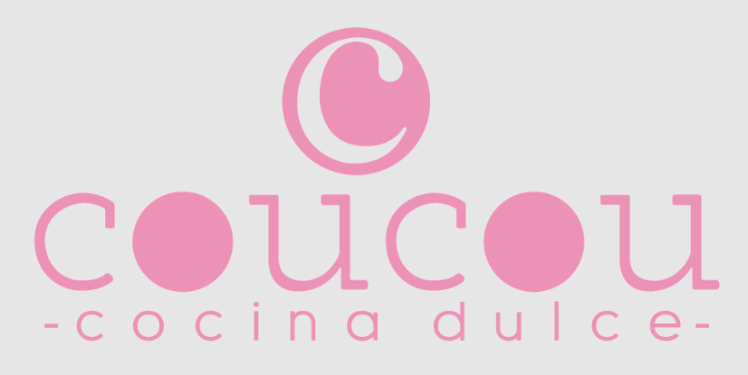
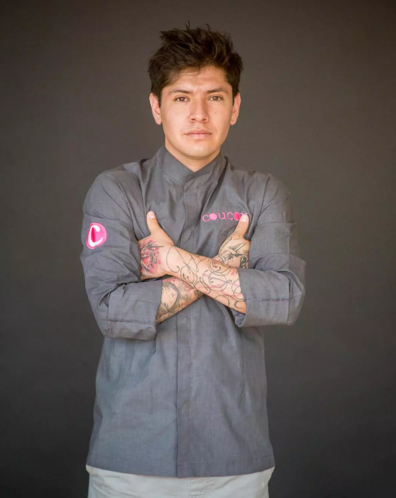
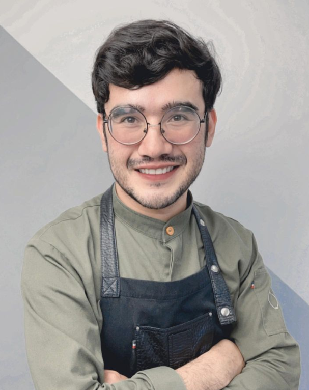

Cursos recomendados
Los siguientes cursos con recomendaciones personales, que considero, son muy valisos en cuanto a contenido y están explicados de manera clara, hay desde cursos básicos hasta diplomados.

STUDIOPAS nace desde el sueño de poder transformar la educación de pastelería tradicional, brindando un aprendizaje integral, con la habilidad de especializar y formar profesionales capaces de crear e innovar en base al conocimiento científico. Una educación que permita comprender no sólo el “¿cómo?” sino que también el “¿Por qué?”.

La dueña y fundadora de StudioPas Academy, escuela especializada en pastelería de alto nivel con más de 27.000 alumnos, es la chef pastelera Camila G. Elizalde chilena con 9 años de experiencia. Campeona de América de pastelería en la Coupe du Monde de la Pâtisserie Americas 2022.

Los cursos de coucou ayudan a comprender mejor los procesos y técnicas de elaboración en pastelería, comparten cada detalle, cada secreto y dan tips que se pueden emplear para crecer profesionalmente.
Israel Velazquez Enriquez en COUCOU como Chef Ejecutivo y propietario se permite la re-interpretación de la pastelería. Actualmente gracias a su trabajo, se vuelve uno de los exponentes de este ramo de gastronomía.
En este instituto puedes especializarte con diplomados de pastelería, panadería y respostería tanto en línea como presenciales. Además cuentan con una variedad de libros y recetarios digitales. El objetivo es crear artistas gastronómicos, involucrando técnicas de las artes plásticas.
El chef Daniel Varela tiene más de 12 años impartiendo clases de repostería y arte comestible. Actualmente es Chef Ejecutivo del Instituto de Repostería Arte & Gastronomía. Apasionado en concentrar el arte y la repostería en una sola mezcla. Además de aprender le apasiona compartir su conocimiento.